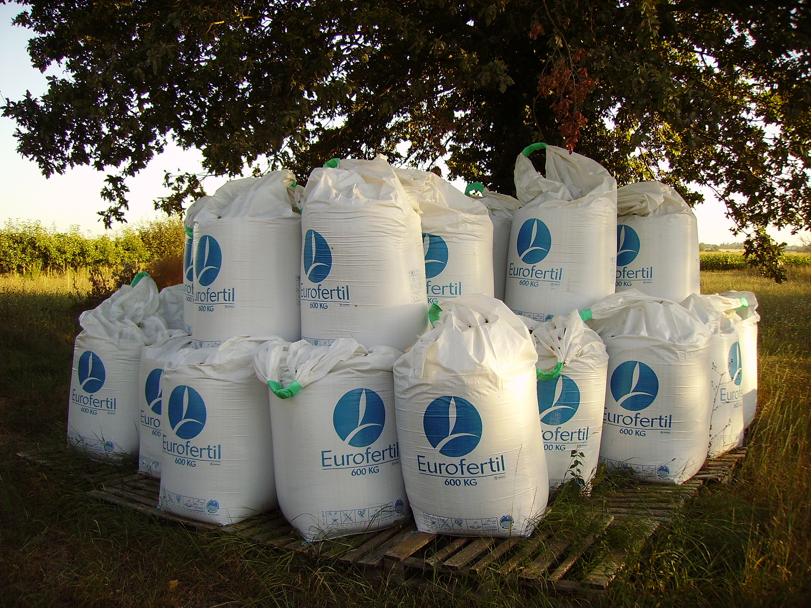

Flexible Intermediate Bulk Containers engineered for safe, efficient bulk material handling. Supplied to chemical, fertilizer, construction, food-grade and mineral sectors across India and for export.
| Safe Working Load | 500 kg – 2,000 kg |
| Safety Factor | 5:1 or 6:1 (as required) |
| Fabric Weight | 130 – 230 GSM |
| Loop Type | 4-loop / 2-loop / stevedore strap |
| Top | Open / duffle top / fill spout |
| Bottom | Flat / discharge spout / pallet pocket |
| Inner Liner | PE liner optional (food/chemical grade) |
| Type | A, B, C (conductive), D (antistatic) |
| MOQ | 500 pieces |
Applications
Plain PP/HDPE fabric. No special electrostatic properties. Suitable for non-flammable products.
Breakdown voltage <6kV. Prevents propagating brush discharges. For flammable dusts in non-flammable solvents.
Groundable conductive fabric. Prevents all electrostatic discharge. For flammable gases, vapours and dusts.
Static dissipative without grounding. Ideal where grounding is impractical. For flammable environments.
Each production batch undergoes top lift, stacking, trip, righting, topple and vibration testing. Test certificates provided with every consignment.